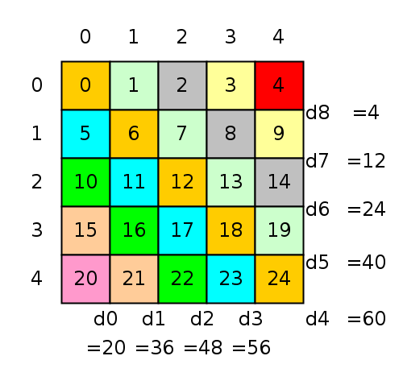

CMSC216 Project 5: Performance Opt and Threading
- Due: 11:59pm Mon 11-Dec-2023
- Approximately 3.0-4.0% of total grade
- Submit to Gradescope
- Projects are individual work: no collaboration with other students is allowed. Seek help from course staff if you get stuck for too long.
CODE/TEST DISTRIBUTION: p5-code.zip
Video Overview: Not Yet Available
CHANGELOG:
- Sat Dec 2 11:07:57 AM EST 2023
- The initial release had an
incorrect
#include "matvec.h"insumdiag_optm.c. This should be#include "sumdiag.h"instead and has been fixed inp5-code.zip. Make the change manually if you have already started work on the project.
1 Introduction
A baseline implementation for a function operating on a matrix is provided and students will create an optimzied version of it which calculates the same result but in a shorter time. Doing so will involve exploiting knowledge of the memory hierarchy to favor cache and enabling multi-threading to further boost perforamnce.
2 Download Code and Setup
Download the code pack linked at the top of the page. Unzip this which will create a project folder. Create new files in this folder. Ultimately you will re-zip this folder to submit it.
| File | State | Notes |
|---|---|---|
Makefile |
Provided | Problem 1 & 2 Build file |
P5-WRITEUP.txt |
EDIT | Fill in answers to assignment questions |
testy |
Testing | Test running script |
sumdiag_optm.c |
EDIT | Problem 1 create and fill in optimized function definition |
sumdiag_benchmark.c |
Provided | Problem 1 main benchmark |
sumdiag_print.c |
Provided | Problem 1 testing program |
sumdiag_base.c |
Provided | Problem 1 baseline function to beat |
matvec.h |
Provided | Problem 1 header file |
matvec_util.c |
Provided | Problem 1 utility functions for matrices/vectors |
test_sumdiag.org |
Testing | Tests to check for memory issues in problem 1 |
3 Problem 1: Matrix Diagonal Sums
3.1 Overview
A problem that occasionally arises in numerical computing when working with Matrices (2D Arrays) is to compute the sums of the Diagonals of a matrix. The main diagonal of a matrix is comprised of all elements at indices (0,0), (1,1), (2,2), and so forth. There are several numbering schemes for diagonals but we will use the one represented in the following diagram which also shows the sums of the diagonals.

Figure 1: 5 by 5 matrix with diagonals colored. The diagram shows our numbering scheme for diagonals and the corresponding diagonal sums. Diagonal numbers start at 0 and progress counter-clockwise around the bottom and right of the matrix. For square matrices, the main diagonal is always numbered as the #rows-1 or #cols-1 which are equal.
A code is provided in the file sumdiag_base.c which computes the
sums of diagonals and stores them in a vector. The algorithm does so
using the most "natural" approach of walking down each diagonal and
totaling its elements then storing the result in the associated vector
element. As you survey the code, note the use of various convenience
functions such as mget(mat,i,j) and vset(vec,i,x) to interact with
the matrix and vector types used.
int sumdiag_BASE_NORMAL(matrix_t *mat, vector_t *vec) {
if(vec->len != (mat->rows + mat->cols -1)){
printf("sumdiag_base: bad sizes\n");
return 1;
}
for(int i=0; i<vec->len; i++){ // initialize vector of diagonal sums
vset(vec,i,0); // to all 0s
}
for(int d=0; d < mat->rows; d++){ // iterate over lower diagonals
int c = 0; // col always starts at 0 in lower diags
for(int r=mat->rows-d-1; r<mat->rows; r++,c++){ // work down rows, right cols for same diag
int el_rc = mget(mat, r, c); // get matrix element on diagonal
int vec_d = vget(vec, d); // retrieve current sum for diag
vset(vec, d, el_rc+vec_d); // add on back to the diagonal sum
}
}
int maxdiag = (mat->rows+mat->cols)-1; // calculate last diagonal
for(int d=mat->rows; d < maxdiag ; d++){ // iterate starting at first upper diag
int r = 0; // row always starts at 0 in upper diags
for(int c=d-mat->cols+1; c<mat->cols; r++,c++){ // work down rows, right cols for same diag
int el_rc = mget(mat, r, c); // matrix element
int vec_d = vget(vec, d); // diagonal sum from vector
vset(vec, d, el_rc+vec_d); // add on to sum
}
}
return 0; // return success
}
While this algorithm is a direct translation of how humans would visually calculate the sums of diagonals for small matrices, it is unfortunately fairly slow when executing on most modern computing systems.
3.2 Optimize Diagonal Sums
The purpose of this problem is to write sumdiag_OPTM() which is a
faster version of the provided sumdiag_BASE() to calculate the sums
of diagonals.
Write your code in the file sumdiag_optm.c.
Keep the following things in mind.
- You will need to acquaint yourself with the functions and types
related to matrices and vectors provided in the
matvec.hand demonstrated in the baseline function. Understanding the layout of the matrix in memory is essential to unlocking performance. - The goal of
sumdiag_OPTM()is to exceed the performance ofsumdiag_BASE()by as much as possible. - To achieve this goal, several optimizations must be implemented and suggestions are given in a later section.
- There is one additional parameter to the optimized function:
sumdiag_OPTM(mat,vec,thread_count). This indicates the number of threads that should be used to compute diagonal sums. - You will need to document your optimizations in the file
P5-WRITEUP.txtand provide timing results of running the optimized version. - Part of your grade will be based on the speed of the optimized code
on
grace.umd.edu. The main routinesumdiag_benchmark.cwill be used for this.
Some details are provided in subsequent sections.
3.3 Evaluation on Grace
The file sumdiag_benchmark.c provides a benchmark for the speed of
diagonal summing. It will be used by graders to evaluate the submitted
code and should be used during development to gauge performance
improvements.
The following machines may be used to evaluate the benchmark:
grace.umd.edu
The scoring present in sumdiag_benchmark.c is "tuned" to these
machines and will likely report incorrect results on other machines.
That means that codes should be so that no unexpected results occur
after submission. Results reported in P5-WRITEUP.txt should be from
one of the above machines.
The output of the sumdiag_benchmark is shown below.
SIZE: the size of the matrix being used. The benchmark always uses square matricesBASE: the time it takes forsumdiag_BASE()to complete.#T: number of threads used for runningsumdiag_OPTM()OPTM: the time it takes forsumdiag_OPTM()to complete.SPDUP: the speedup ofsumdiag_OPTM()oversumdiag_BASE()which isBASE / OPTM.POINTS: earned according to the following code:double points = log(speedup_OPTM) / log(2.0) * size / 4500;
This scheme means that unless actual optimizations are implemented, 0 points will be scored. Roughly this scores according to a logarithmic scale that is weighted towards more points if speedups at larger sized inputs is achieved.
Below are several demonstration runs of sumdiag_benchmark.
# RUN ON INCORRECT MACHINE (NOT loginNN): NOTE WARNINGS
homeputer> ./sumdiag_benchmark
WARNING: expected host 'grace1.umd.edu' but got host 'val'
WARNING: timing results / scoring will not reflect actual scoring
WARNING: run on host 'grace1.umd.edu' for accurate results
==== Matrix Diagonal Sum Benchmark Version 4 ====
------- Tuned for grace.umd.edu machines --------
Running with 5 sizes (max 8192) and 4 thread_counts (max 4)
SIZE BASE #T OPTM SPDUP POINTS
1024 0.041 1 0.019 2.18 0.26
2 0.017 2.44 0.29
3 0.017 2.42 0.29
4 0.017 2.43 0.29
2048 0.208 1 0.068 3.04 0.73
2 0.060 3.45 0.81
3 0.061 3.43 0.81
4 0.058 3.60 0.84
4096 0.811 1 0.230 3.53 1.66
2 0.220 3.68 1.71
3 0.221 3.67 1.71
4 0.221 3.68 1.71
4099 0.548 1 0.226 2.42 1.16
2 0.222 2.47 1.19
3 0.225 2.43 1.17
4 0.223 2.45 1.18
8192 2.843 1 0.887 3.21 3.06
2 0.893 3.18 3.04
3 0.892 3.19 3.05
4 0.887 3.21 3.06
RAW POINTS: 28.02
TOTAL POINTS: 28 / 35
WARNING: expected host 'grace1.umd.edu' but got host 'val'
WARNING: timing results / scoring will not reflect actual scoring
WARNING: run on host 'grace1.umd.edu' for accurate results
# PARTIAL CREDIT RUN
>> ssh grace.umd.edu
...
grace10: ./sumdiag_benchmark
==== Matrix Diagonal Sum Benchmark Version 4 ====
------- Tuned for grace.umd.edu machines --------
Running with 5 sizes (max 8192) and 4 thread_counts (max 4)
SIZE BASE #T OPTM SPDUP POINTS
1024 0.027 1 0.017 1.60 0.15
2 0.017 1.62 0.16
3 0.017 1.63 0.16
4 0.017 1.62 0.16
2048 0.104 1 0.066 1.58 0.30
2 0.066 1.58 0.30
3 0.066 1.57 0.30
4 0.067 1.57 0.30
4096 0.507 1 0.273 1.86 0.82
2 0.284 1.79 0.76
3 0.288 1.76 0.75
4 0.274 1.85 0.81
4099 0.484 1 0.272 1.78 0.76
2 0.272 1.78 0.76
3 0.274 1.77 0.75
4 0.272 1.78 0.76
8192 2.991 1 1.087 2.75 2.66
2 1.217 2.46 2.36
3 1.086 2.75 2.66
4 1.085 2.76 2.66
RAW POINTS: 18.32
TOTAL POINTS: 18 / 35
# FULL CREDIT RUN
grace10: ./sumdiag_benchmark
==== Matrix Diagonal Sum Benchmark Version 4 ====
------- Tuned for grace.umd.edu machines --------
Running with 5 sizes (max 8192) and 4 thread_counts (max 4)
SIZE BASE #T OPTM SPDUP POINTS
1024 0.029 1 0.017 1.73 0.18
2 0.009 3.26 0.39
3 0.009 3.06 0.37
4 0.013 2.23 0.26
2048 0.124 1 0.066 1.88 0.41
2 0.033 3.72 0.86
3 0.025 4.99 1.06
4 0.028 4.40 0.97
4096 0.505 1 0.259 1.95 0.88
2 0.144 3.51 1.65
3 0.096 5.28 2.19
4 0.093 5.42 2.22
4099 0.481 1 0.297 1.62 0.63
2 0.132 3.65 1.70
3 0.096 5.02 2.12
4 0.099 4.85 2.07
8192 2.895 1 1.077 2.69 2.60
2 0.529 5.48 4.47
3 0.351 8.24 5.54
4 0.339 8.55 5.64
RAW POINTS: 36.20
TOTAL POINTS: 35 / 35
Note that it is possible to exceed the score associated with maximal performance (as seen in the RAW POINTS reported) but no more than the final reported points will be given for the performance portion of the problem.
Achieving very high speedup and significantly exceeding the max score may garner some MAKEUP credit: you'll know you earned this as the benchmark will report as much
3.4 sumdiag_print.c Testing Program
As one works on implementing optimizations in sumdiag_OPTM(), bugs
which compute incorrect results are often introduced. To aid in
testing, the sumdiag_print() program runs both the BASE and OPTM
versions on the same matrix and shows all results. The matrix size is
determined from the command line and is printed on the screen to
enable hand verification. Examples are below.
>> sumdiag_print # show usage: pass mat size and thread_count usage: sumdiag_print <size> <thread_count> > ./sumdiag_print 5 1 # run on a size 5 by 5 matrix with 1 thread ==== Matrix Diagonal Sum Print ==== Matrix: 5 x 5 matrix # shows the matrix 0: 0 1 2 3 4 1: 5 6 7 8 9 2: 10 11 12 13 14 3: 15 16 17 18 19 4: 20 21 22 23 24 Diagnonal Sums: # prints diag sums for BASE/OPTM [ i]: BASE OPTM [ 0]: 20 20 # matching [ 1]: 36 36 [ 2]: 48 48 [ 3]: 56 56 [ 4]: 60 36 *** # not matching: OPTM is buggy [ 5]: 40 21 *** [ 6]: 24 10 *** [ 7]: 12 3 *** [ 8]: 4 0 ***
3.5 Optimization Suggestions and Documentation
Labs and lectures will cover several kinds of optimizations which are
useful to improve the speed of sumdiag_OPTM(). Two optimizations
are required which are:
- Re-ordering memory accesses to be as sequential as possible which favors cache. Unless memory accesses favor cache, it is unlikely that many optimizations will have much effect.
- Use threads to split up the work of calculating diagonals. The problem parallelized well as worker threads can mostly compute independent results before combining them with the results of other threads.
In most cases, implementing these two correctly will yield full performance points.
Students must describe the specific techniques they used for
optimizing the code in a short writeup for the project by answering
questions in P5-WRITEUP.txt.
3.6 Constraints
Use a Mutex
While it may be possible to implement a completely lock-free solution with threads, your implementation MUST use mutexes to coordinate threads as they access shard data in some part of the code. Credit will be deducted if you do not illustrate use of mutexes as one of the course goals for students to demonstrate proficiency with thread coordination.
Avoid Global Variables
In many simple threaded programs, global variables are a convenient way to give worker threads/functions access to shared data. AVOID THIS for full credit. Use "contexts" instead: define a struct type that contains the data necessary for a worker thread to contribute. Then pass this struct to the worker thread on creation. Common elements of such structs are
- A numeric thread id
- A total thread count
- References (structs or pointers) to data for the computation
- Pointers to any shared locks that are needed to coordinate access
Lecture and discussion demos will provide some examples of how this might look
3.7 Additional Optimizations for Makeup Credit
Additional optimizations may be performed to further speed up the computations. Some of these are described in Chapter 5 of Bryant/O'Hallaron.
- Replacing repeated memory references with local non-pointer data which will likely be assigned to registers to alleviate slow-down from memory accesses.
- Increasing potential processor pipelining by adjusting the destinations of arithmetic operations.
- Decreasing any unnecessary work such as memory accesses or arithmetic operations.
None of these are required. However, MAKEUP Credit is available for achieving scores that greatly exceed the original baseline version. The benchmark program will check for high scores and give an obvious sign that makeup credit is earned.
3.8 Optimization Hints
- While optimizing the memory access pattern, it is handy to be able to convert a Row/Column index to a Diagonal number (e.g. Row 3, Col 1 is in Diagonal 2). Research or derive a formula that relates a row/column index to its diagonal number to aid your optimization efforts.
- Lecture and discussion will provide examples of how to effectively deploy threads and use a mutex to coordinate them. Draw inspiration from those materials for your work.
- To get the most out of thread performance, code them to compute private partial results. This avoids any unnecessary mutex locking. In most cases, threads will need to update a shared variable so a mutex is needed (in fact required in your solution). However, locking the mutex only once at the end of the thread's work greatly benefit performance over repeated lock/unlock approaches.
3.9 Grading Criteria for Problem 1 (100%) grading 100
The file P4-WRITEUP.txt has several questions that should be
answered in a similar fashion to lab write-ups. These document the
optimizations used in sumdiag_OPTM() require a justification for
their use.
| Weight | Criteria |
|---|---|
| AUTOMATED TESTS | |
| 10 | No output/memory errors reported make test-prob1 |
| PERFORMANCE EVALUATION | |
| 35 | Performance of sumdiag_OPTM() on grace.umd.edu |
As measured by the provided sumdiag_benchmark |
|
| Best score of 3 runs done by graders after submission closes | |
MANUAL INSPECTION of sumdiag_optm.c |
|
| 5 | Effort to optimize memory access pattern in sumdiag_OPTM() |
| 5 | Effort to utilize threads in sumdiag_OPTM() |
| 5 | Clear effort to coordinate thread access to shared data using a mutex |
| 5 | Avoids the use of Global Variables in favor of local "contexts" to give threads data they need |
| 5 | Overall clean and readable style of code with supporting commenting |
MANUAL INSPECTION of P4-WRITEUP.txt |
|
| 5 | Answer 1A P4-WRITEUP.txt : source code |
| 5 | Answer 1B P4-WRITEUP.txt : timing table |
| 10 | Answer 1C P4-WRITEUP.txt : memory optimization |
| 10 | Answer 1C P4-WRITEUP.txt : thread optimization |
4 Writeup
This assignment involves answering questions in the file
P5-WRITEUP.txt which is included in the code pack and pasted below.
____________
P5 WRITEUP
____________
- Name: (FILL THIS in)
- UID: (THE kauf0095 IN kauf0095@terpmail.umd.edu)
Answer the questions below according to the project specification. Write
your answers directly in this text file and submit it along with your
code.
PROBLEM 1: sumdiag_OPTM()
=========================
Time your code using sumdiag_benchmark on grace.umd.edu.
(A) Paste Source Code
~~~~~~~~~~~~~~~~~~~~~
Paste a copy of your source code for the function
`sumdiag_OPTM()'. Include any "helper" functions you used such as a
thread worker function.
####################### YOUR ANSWER HERE #########################
##################################################################
(B) Timing on grace.umd.edu
~~~~~~~~~~~~~~~~~~~~~~~~~~~
Paste a copy of the results of running `sumdiag_benchmark' on
`grace.umd.edu' in the space below which shows how your performance
optimizations improved on the baseline codes.
####################### YOUR ANSWER HERE #########################
##################################################################
(C) Memory Optimization
~~~~~~~~~~~~~~~~~~~~~~~
Describe how your optimized the memory access pattern of the program.
- What order did you visit matrix elements in?
- How did relate elements in the matrix to the diagonals that belonged
to?
####################### YOUR ANSWER HERE #########################
##################################################################
(D) Thread Optimization
~~~~~~~~~~~~~~~~~~~~~~~
Describe how you employed threads to further increase the speed of
your code.
- How did you subdivide the work / matrix among the threads?
- What coordination was required as threads would update any shared
data?
- How often did threads need to update shared data?
####################### YOUR ANSWER HERE #########################
##################################################################